A  -algebra on a set
-algebra on a set  is a family
is a family  of
subsets containing and closed under complement and countable
union. The pair
of
subsets containing and closed under complement and countable
union. The pair  is a measurable space and the
members of are measurable.
is a measurable space and the
members of are measurable.
A -algebra contains  and is closed under
countable intersections and set differences. The intersection of any
non-empty family of -algebras on is one, so for every
family
and is closed under
countable intersections and set differences. The intersection of any
non-empty family of -algebras on is one, so for every
family  of subsets there is a smallest -algebra
of subsets there is a smallest -algebra
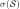
containing it.
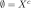
;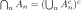
;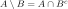
. The three closure conditions each hold in an intersection of-algebras because they hold in every
member. The family of -algebras containing is
non-empty, the power set being one, so their intersection is the
smallest.
The Borel -algebra of a topological space is the
-algebra generated by the open sets. Its members are the
Borel sets.
A measure on is a map
with
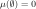
that is countably additive: for every sequence of pairwise disjoint measurable sets. The triple is a measure space, and
is a measure space, and  is finite if
is finite if
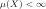
, probability if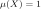
.
Let be a measure. Then is monotone
(
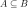
implies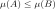
), countably subadditive ( with no disjointness), continuous from below (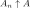
implies ) and continuous from above when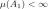
(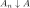
implies ).Monotonicity:
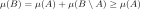
, by additivity on the disjoint pair.Continuity from below: put
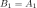
and , pairwise disjoint with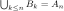
and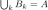
. Then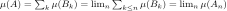
.Subadditivity: with
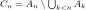
, disjoint with the same union and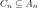
,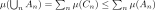
.Continuity from above:
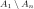
increases to , so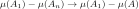
by the first part and additivity, the finiteness of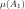
making the subtraction legitimate.
A function  on a measurable space is measurable
if
on a measurable space is measurable
if
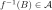
for every Borel set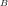
; functions with values in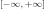
are measurable if in addition the preimages of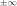
are measurable.
 is measurable if and only if
is measurable if and only if
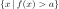
is measurable for every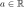
. Continuous functions on a topological space are Borel measurable.The family
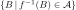
is a-algebra, preimage commuting with complements and unions. If
it contains every ray 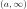
it contains the-algebra they generate, which is the Borel one – every open
subset of  is a countable union of open intervals, and an interval
is a difference of two rays. The converse is immediate, a ray being
Borel. For a continuous , preimages of open sets are open, hence
Borel.
is a countable union of open intervals, and an interval
is a difference of two rays. The converse is immediate, a ray being
Borel. For a continuous , preimages of open sets are open, hence
Borel.
If  are measurable so are
are measurable so are
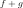
,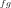
, and
and
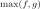
; and if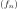
are measurable so are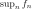
,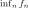
,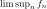
and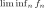
, as functions into . In particular a pointwise limit of measurable functions is measurable.For the supremum,
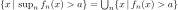
, a countable union of measurable sets; the infimum is the supremum of the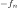
, and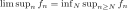
combines the two.For sums,
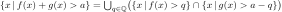
, a countable union, since a real sum exceeds exactly when a
rational separates the terms appropriately. Writing
exactly when a
rational separates the terms appropriately. Writing
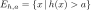
, the function is measurable
because 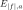
is for 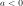
and otherwise; because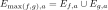
; and from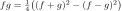
once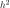
is known measurable, which holds since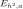
is for
and for .
The last theorem is the whole point. The measurable functions are closed under every countable limiting operation, which the Riemann integrable ones are not, and that closure is what makes the convergence theorems of the next note possible. The price is that no explicit description of a general measurable set exists – is defined from above, by intersection, exactly like a generated subgroup or an ideal.